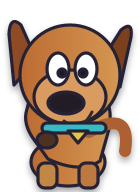

Un asesinato detiene el Orient Express. Poirot y el equipo de Scooby-Doo necesitan una nueva detective: tú.
Recorre escenarios, habla con personajes, encuentra evidencias y resuelve desafíos para reconstruir el caso de la película de 2017.
🔍 Explorar 🧩 Resolver 🎒 Reunir pistasSelecciona un personaje antes de comenzar.
Un banco de 90 preguntas genera un caso diferente en cada intento. Las pistas y minijuegos forman parte de la aventura.
Versión de prueba: el juego todavía necesita que se publique su nuevo Google Apps Script para registrar notas oficiales. Los intentos de ensayo permanecen en este navegador.

SCOOBY-DOO¡Investiguemos juntos!
Buen trabajo.
NOTA OBTENIDA / 5,0